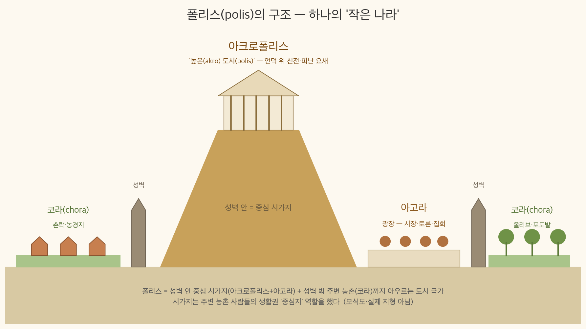
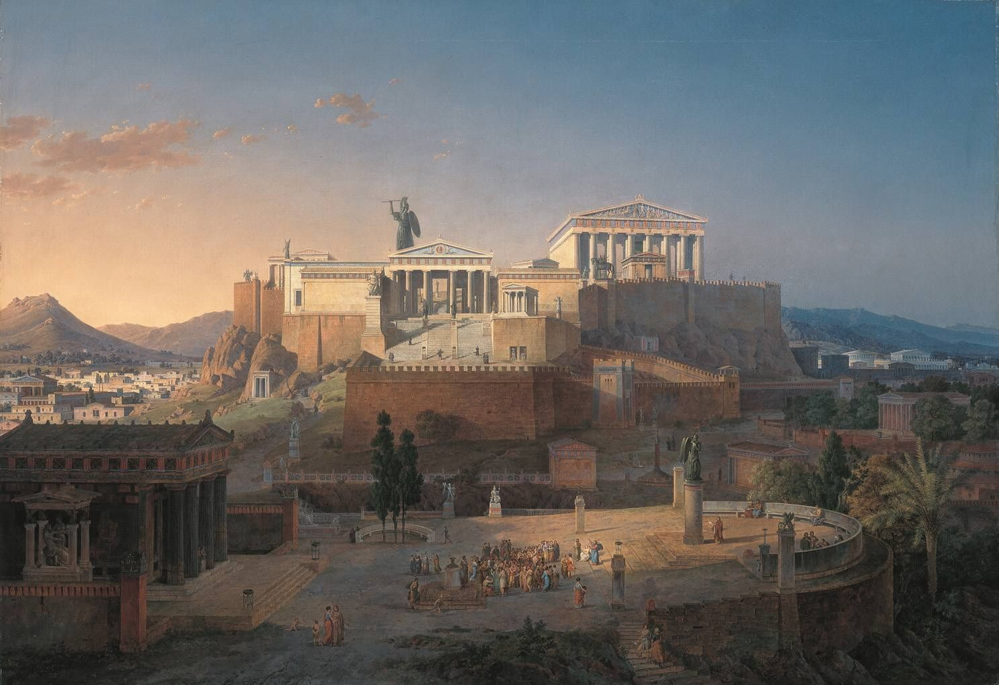

역사① Ⅱ단원 13~14차시 — 평민은 어떻게 귀족을 이겼을까? 아테네 민주정 200년의 여정
📌 학습 목표
- 아테네 민주정이 왜 아테네에서만 이렇게 발전했는지 인과관계로 설명할 수 있다.
- 솔론·클레이스테네스·페리클레스의 개혁을 단계별 차이를 중심으로 비교할 수 있다.
- 아테네 민주정의 한계가 오늘날 민주주의에 주는 시사점을 자신의 관점으로 서술할 수 있다.
✨ 오늘의 고급 단어
| 고급 단어 | 쉽게 말하면 |
| 폴리스(polis) | 그리스의 작은 도시 국가. 아크로폴리스(신전·요새) + 아고라(광장)로 구성 |
| 민회(民會) | 시민이 모여 국가 중대사를 결정한 정기 총회 |
| 도편 추방제 | 독재 위험 인물 이름을 도자기 파편에 적어 투표, 10년 국외 추방 |
| 배심원(陪審員) | 재판에 참여해 판결하는 시민. 아테네에선 추첨으로 뽑힘 |
| 팔랑크스(phalanx)[^3] | 다수의 중무장 보병이 짠 밀집 대형 전술 |
| 금권정(金權政) | 재산 등급에 따라 정치 참여 자격을 배분하는 체제. 솔론의 개혁이 고전적 예. 영어로 timocracy |
| 아크로폴리스 | "높은 도시"라는 뜻의 방어용 구릉, 신전이 있는 곳 |
| 데모크라티아 | demos(민중) + kratos(권력) = "민중이 가진 권력" → democracy의 어원 |
📖 1단계: 복습 연결 — 페르시아는 왜 그리스를 못 이겼을까?
2-2-1차시(페르시아)에서 배운 것:
- 페르시아는 관용 정책으로 서아시아 대제국을 유지
- 그러나 지중해로 팽창하려다 그리스와 충돌 → 그리스·페르시아 전쟁
거대 제국 페르시아 (전제 군주제)
vs
작은 폴리스들의 연합 (시민 참여 정치)
↓
그리스 승리 (기원전 5세기)
↓
숙제: "왜 작은 그리스가 거대한 제국을 이겼을까?"
"시민이 정치에 참여한다는 게 왜 그리 강력했을까?"
💡 중요한 질문
이 단원은 "아테네 민주정이 어떻게 발달했나"뿐 아니라, "시민이 직접 참여하는 정치가 왜 그토록 강한 힘을 발휘했는가"를 묻는다. 이 질문은 2,500년 뒤 오늘날에도 똑같이 유효하다.
📖 2단계: 폴리스의 탄생 — 왜 작은 나라들이었나?
2-1. 지형이 만든 정치 형태
| 조건 | 그리스의 상황 | 결과 |
| 지형 | 산과 계곡이 많고 평야가 적음 | 넓은 영역 국가 형성 불가 |
| 해안 | 섬과 항구가 많음 | 바다를 이용한 생활·교역 발달 |
| 방어 | 침략이 잦음[^1] | 방어하기 좋은 언덕 중심으로 정착 |
기원전 1200년경 에게 문명이 몰락한 후, 남쪽으로 내려간 그리스인들은 해안 가까운 방어지에 모여 작은 공동체를 이루었다. 이 작은 도시 국가들이 ①폴리스다.
2-2. 폴리스의 구조와 유대감
[하나의 폴리스 안] 가파른 언덕 위 = ②아크로폴리스 └ 파르테논 같은 신전, 방어용 성채 아래쪽 평지 = ③아고라 └ 시장·토론·집회가 열리는 광장



💡 아크로폴리스 = '높은(akro) + 도시(polis)'. 폴리스에서 가장 높은 바위 언덕이다. 평소에는 수호신을 모신 신전(아테네는 파르테논)이 있는 신성한 곳, 전쟁이 나면 주민이 올라가 버티는 피난 요새였다. 위 사진처럼 지금도 아테네 시내 어디서든 올려다보인다.
🌏 폴리스는 시가지만이 아니다 (교과서 외 보충) — 성벽 안 시가지(아크로폴리스+아고라)에 성벽 밖 주변 농촌(코라)까지 합쳐야 하나의 폴리스다. 농촌 사람들도 시장·재판·제사는 시가지로 나왔으니, 시가지는 폴리스 생활권의 '중심지' 역할을 한 셈이다.
기원전 ④8세기 무렵 지중해 전역에 폴리스가 퍼졌다. 폴리스들은 정치적으로는 독립이었지만,
(교과서 원문) "폴리스들은 정치적으로 독립되어 있었으나, 서로 같은 언어를 사용하고 같은 신들을 믿었으며, 주기적으로 ⑤올림피아 제전을 열어 유대감을 다졌다." — 비상교육 역사① p.43
💡 왜 통일 국가가 안 됐나?
산으로 갈라진 지형 때문에 이집트·페르시아처럼 거대 관료제 왕국을 만들기가 어려웠다. 대신 수천 명 규모의 작은 공동체가 각자 정치를 실험할 자유를 얻었다. 역설적으로, 이 "작음"이 민주정을 가능하게 했다.
📖 3단계: 스파르타 vs 아테네 — 같은 그리스, 다른 길
3-1. 스파르타 — "왜 그렇게 훈련만 했을까?"
스파르타는 ⑥정복 국가로 출발했다. 소수의 시민이 전체 인구의 80%가 넘는 예속민·노예를 다스려야 했기에, 반란을 막기 위해 강력한 ⑦군사 통치를 유지해야 했다.
| 계층 | 비율 | 역할 |
| 자유 시민(스파르티아타이) | 약 5~10% | 정치·군사 전념 |
| 페리오이코이(반자유민) | 약 10~15% | 상공업, 군 복무 |
| ⑧헤일로타이(예속민)[^2] | 약 70~80% | 농업 노동 |
스파르타 시민의 생애 주기 7세 → 집 떠나 공동 훈련 시작 20세 → 군대 공동 기숙 생활 30세 → 결혼 허용, 공동 식사·훈련 병행 60세 → 군 복무 면제
정치는 왕과 귀족이 담당했으나, 나라의 중대사는 ⑨민회에서 결정했다.
⚠️ 자주 하는 오해 — "스파르타도 민주정이었다?"
스파르타에도 민회(아펠라)가 있어 민주적으로 보일 수 있으나, 실권은 왕 2명[^7]과 원로회, 감독관 5명이 쥐었다. 민회는 제안에 찬반만 외치는 거수기 역할에 가까웠다. 아테네 민주정과는 결이 전혀 다르다.
3-2. 아테네 — "왜 평민이 정치에 낄 수 있었나?"
아테네는 처음에는 왕정, 이후 ⑩귀족정으로 바뀌었다. 그런데 하나의 변화가 모든 것을 바꿨다.
무역·상공업 발달 (해상 폴리스 아테네의 특성)
↓
평민 중 부유층 등장
↓
자비로 무기·갑옷 마련 가능
↓
⑪팔랑크스 = 중무장 보병 밀집 대형 전술 도입
└ 소수 귀족 기병 대신 다수 평민 보병이 전쟁의 핵심
↓
"전쟁에서 싸우는 우리가 정치에도 참여해야 한다!"
↓
평민의 정치 참여 요구 폭발
💡 핵심 포인트 (★중요)
평민이 그냥 "달라"고 한다고 귀족이 권력을 내주지 않는다. 아테네에서 권력 이동이 가능했던 이유는 전쟁 방식의 변화다. 전쟁의 주역이 바뀌면 정치의 주역도 바뀐다 — 이건 역사 전체를 관통하는 법칙이다.
📖 4단계: 아테네 민주정의 3단 도약 — 솔론, 클레이스테네스, 페리클레스
아테네 민주정은 한 번에 완성되지 않았다. 3명의 개혁가가 약 150년에 걸쳐 단계별로 제도를 쌓아 올렸다.
4-1. ⑫솔론 — 기원전 6세기 초: "문을 살짝 열다"
| 정책 | 내용 |
| 재산 등급제 | 시민을 4계급으로 나눠, 재산 등급에 따라 참정권 차등 분배 |
| 부채 탕감 | 빚 때문에 노예가 된 평민을 해방 |
| 한계 | 귀족·평민 양쪽 모두 불만 (귀족은 "왜 주느냐", 평민은 "왜 더 안 주느냐") |
💡 솔론의 의미: 정치 참여에 "혈통"이 아닌 "재산"이라는 새 기준을 도입했다. 불완전했지만, "참여 자격은 바뀔 수 있다"는 선례를 남겼다. 이렇게 재산 기준으로 참정권을 분배하는 체제를 금권정(金權政, timocracy)이라 부른다.
[정치 참여 기준의 진화] 귀족정 ➡️ 금권정 ➡️ 민주정 (혈통) (재산) (시민 자격) 기존 솔론 클레이스테네스~
4-2. ⑬클레이스테네스 — 기원전 6세기 말: "기반을 만들다"
| 정책 | 내용 |
| 부족제 개편 | 혈연 중심 → 지역 중심 10개 부족으로 재편 (귀족의 혈연 기반 해체) |
| 500인 평의회[^4] | 각 부족에서 50명씩 추첨으로 선발, 민회 안건 준비·행정 담당 |
| ⑭재산 기준 폐지 | 정치 참여의 재산 요건 제거 → 성인 남성 시민 모두 참여 가능 |
| 도편 추방제[^5] | 독재자 출현 방지용 예방 장치 |
[도편 추방제 작동 방식]
매년 민회에서 시행 여부 결정
↓
위험 인물 이름을 도자기 파편(오스트라콘)에 적어 투표
↓
6,000표 이상 모이면 최다 득표자 1명 → ⑮10년 국외 추방
↓
10년 후 복귀 가능 (재산·시민권은 유지)
💡 클레이스테네스가 진짜 바꾼 것: 표면적으로는 "제도"지만, 본질은 "귀족의 혈연 네트워크를 해체한 것"이다. 혈연으로 뭉친 귀족 세력을 지역 단위로 흩어 놓으니 더 이상 귀족이 자기네끼리 뭉쳐 권력을 독점할 수 없었다.
4-3. ⑯페리클레스 — 기원전 5세기 중엽: "전성기를 완성하다"
| 정책 | 내용 |
| 민회 중심 | 민회에서 실질적 입법·의결 (성인 남성 시민 직접 참여) |
| ⑰추첨 선출 | 관직·배심원을 대부분 추첨으로 선발 → "능력보다 기회의 평등" |
| ⑱수당 지급 | 가난한 시민도 정치 참여할 수 있도록 공무 수당 지급 |
(교과서 원문) "관직과 배심원은 대부분 추첨으로 뽑았고, 이들에게는 수당도 지급되었다. 그러나 아테네에서는 성인 남성만 정치에 참여할 수 있었고, 여성, 노예, 외국인은 정치에 참여할 수 없었다." — 비상교육 역사① p.44
💡 왜 추첨제였나?
선거는 결국 "말 잘하고 돈 있는 사람"에게 유리하다. 추첨은 가난한 시민에게도 공직 기회를 주는 가장 급진적인 평등 장치였다. 오늘날 우리가 "선거가 당연"하다고 여기는 것과 정반대 발상이다.
4-4. ⚠️ 아테네 민주정의 한계 — 누가 "시민"이었나?
[아테네 전체 인구 구성 (추정)] ┌─────────────────────────────┐ │ 성인 남성 시민 (약 10~15%) │ ← 민주정 참여 ✅ ├─────────────────────────────┤ │ 여성 │ ← 참여 불가 ❌ ├─────────────────────────────┤ │ 노예 (전체의 30~40%) │ ← 참여 불가 ❌ ├─────────────────────────────┤ │ 외국인(메토이코이) │ ← 참여 불가 ❌ └─────────────────────────────┘
→ 민주정에 참여할 수 있었던 성인 남성 시민[^6]은 전체 인구의 약 10~15%에 불과했다.
💡 핵심 질문 (★중요)
"모든 시민이 평등"했던 게 아니라 "시민으로 인정된 사람들"이 평등했다. 노예가 열심히 일해 준 덕분에 시민이 시간을 내 정치를 할 수 있었다는 점도 함께 봐야 한다. 아테네 민주정은 "시민 범위를 누가 정하는가"라는 질문을 오늘날 우리에게 남겼다.
📖 5단계: 전쟁이 바꾼 그리스 — 영광에서 쇠퇴로
아테네 민주정이 꽃필 수 있었던 배경에는 페르시아를 이긴 자신감이 있었다. 하지만 같은 전쟁이 결국 그리스를 무너뜨리는 씨앗이 된다.
5-1. 그리스·페르시아 전쟁 (기원전 5세기) — 자신감의 원천
| 순서 | 시기 | 핵심 전투 | 결과 |
| 1차 | BC 492 | 자연재해로 중도 포기 | — |
| 2차 | BC 490 | ⑲마라톤 전투 | 아테네 승리 |
| 3차 | BC 480~479 | 살라미스 해전·플라타이아이 전투 | 그리스 연합 승리 |
전쟁 후 그리스는 ⑳델로스 동맹을 결성해 페르시아 재침입에 대비했다. 아테네가 동맹의 중심이었다.
5-2. 펠로폰네소스 전쟁 — 자신감의 대가
아테네가 델로스 동맹을 지배 도구로 변질
↓
동맹 자금으로 파르테논 재건, 무역 독점
↓
스파르타 + 코린트 등이 위협 느낌
↓
㉑펠로폰네소스 전쟁 발발 (BC 431~404)
델로스 동맹(아테네) ↔ 펠로폰네소스 동맹(스파르타)
↓
㉒스파르타 승리 → 그러나 그리스 전체 쇠퇴
↓
기원전 4세기: ㉓마케도니아가 그리스 정복
⚠️ 자주 하는 오해 — "전쟁 승자는 강해진다?"
스파르타가 승리했지만 27년 전쟁의 피해로 실제로는 스파르타도 약해졌다. 둘 다 피폐해진 틈을 타 북쪽 마케도니아가 그리스 전체를 정복했다. 이는 다음 차시 2-2-3 헬레니즘의 출발점이 된다.
📖 6단계: 그리스 문화 — 인간을 중심에 놓다
그리스가 남긴 진짜 유산은 군사도 정치도 아닌 문화다. 이때 만들어진 사고방식이 서양 문명의 기초가 된다.
6-1. 왜 "인간 중심"이라 불리나?
| 증거 | 내용 |
| 신화 | 신들이 인간처럼 사랑·질투·배신을 함 (이집트·메소포타미아 신과 다름) |
| 조각·건축 | 「원반 던지는 사람」, ㉔파르테논 신전 — 인체 비례·조화·균형 |
| 철학 | 관심이 자연 → 인간과 사회로 이동 |
6-2. 철학 — 소피스트 vs 소크라테스
초기 자연 철학 (탈레스 등)
↓
기원전 5세기, 관심이 인간·사회로 이동
↓
┏━━━━━━━━━━━━━━━━━━━━━━━━━━━━━━━━━━━━━━━━┓
┃ [ 소피스트 ] ┃
┃ · 진리는 상대적 ┃
┃ · 설득·수사가 핵심 ┃
┃ ┃
┃ [ ㉕소크라테스 ] ┃
┃ · 객관적·절대적 진리가 존재 ┃
┃ · "너 자신을 알라" ┃
┃ · 문답법(산파술)로 진리 추구 ┃
┗━━━━━━━━━━━━━━━━━━━━━━━━━━━━━━━━━━━━━━━━┛
↓
플라톤(이데아) → 아리스토텔레스(경험·관찰)
↓
서양 철학의 바탕
6-3. 문학·역사·과학
| 분야 | 인물·작품 | 의의 |
| 문학 | ㉖호메로스의 『일리아드』·『오디세이아』 | 그리스 최초의 서사시 |
| 연극 | 「오이디푸스왕」·「안티고네」 | 인간관계·사회 문제 주제 |
| 역사 | 헤로도토스(『역사』), 투키디데스(『펠로폰네소스 전쟁사』) | 신화가 아닌 사실 기반 역사 서술 |
| 의학 | ㉗히포크라테스 | 의학을 주술에서 분리, 경험·관찰 기반 |
| 수학 | 피타고라스 | 수학적 증명의 전통 |
💡 그리스 문화의 한 줄 정리
"신이 세상을 설명하는 시대" → "인간이 이성으로 세상을 설명하는 시대"의 시작.
🔗 핵심 정리 — 인과 사슬
지형이 만든 작은 폴리스들
↓
무역 → 평민 부유화 → 팔랑크스로 전쟁 참여
↓
평민의 정치 참여 요구
↓
솔론(재산 기준 도입) → 클레이스테네스(재산 기준 폐지 + 도편 추방제)
↓
페리클레스: 추첨제·수당·직접 민주정 전성기
↓
⚠️ 한계: 여성·노예·외국인 배제
↓
그리스·페르시아 전쟁 승리 → 펠로폰네소스 전쟁 자멸 → 마케도니아에 정복
↓
유산: 민주정의 첫 실험 + 인간 중심 문화 → 서양 문명의 바탕
💡 오늘의 한 줄
아테네 민주정은 "시민의 범위를 누가 정하느냐"가 곧 민주주의의 수준을 결정한다는 사실을, 2,500년 앞서 실험으로 보여 줬다.
📊 한눈에 비교 — 스파르타 vs 아테네
| 비교축 | 스파르타 | 아테네 |
| 국가 성격 | ㉘정복 국가 | 상공업·무역 중심 |
| 지형 | 내륙 | 해안 (항구 폴리스) |
| 정치 | 군사적 ㉙과두정 (왕·귀족 중심) | 직접 민주정 |
| 경제 기반 | 예속민 농업 노동 | 무역·상공업 |
| 교육 | 7세부터 군사 훈련 | 철학·예술·체육 균형 |
| 사회 통제 | 엄격한 규율, 외부 교류 제한 | 개방적, 외국인·무역 활발 |
| 민회 역할 | 거수기 수준 | 실질적 의사 결정 기관 |
| 강점 | 막강한 군사력 | 문화·경제·정치 실험 |
| 한계 | 소수 시민이 다수 노예 통제 | 시민 범위가 좁음 (여·노·외 제외) |
📊 한눈에 비교 — 고대 아테네 vs 오늘날 민주주의
| 구분 | 고대 아테네 | 오늘날 |
| 시민 범위 | ㉚성인 남성 시민만 (전체의 약 10~15%) | 일정 연령(18세) 이상 모든 국민 |
| 참여 방식 | ㉛직접 민주주의 (민회 직접 참여) | ㉜대의(간접) 민주주의 (선거로 대표 선출) |
| 공직 선출 | ㉝추첨제 중심 | ㉞선거제 중심 |
| 수당 | 공무 수당 지급 | 선출직 공무원 임금 |
| 독재 견제 | ㉟도편 추방제 | 탄핵·삼권분립·언론 자유 |
✏️ 활동
활동 1: 페리클레스의 결재판
너는 페리클레스의 참모야. 민회에 올라온 세 안건에 찬성/반대 + 그 이유를 적어보자.
| 안건 | 찬성/반대 | 이유 |
| "재판 배심원에게도 수당을 지급하자" | 찬성(예시) | 가난한 시민이 하루 일을 쉬고 배심 일을 할 수 있어야 '모든 시민의 평등'이 실질이 됨. 재산이 정치 참여를 가르면 도로 귀족정이 된다. |
| "외국인(메토이코이)에게도 시민권을 주자" | 조건부 반대(예시) | 원칙적으로는 확대가 맞지만, 델로스 동맹 자금·군역 분담 구조가 시민권과 연결되어 있어 급격한 개방은 재정·병역 위기를 부른다. 단계적 통합안을 제안. |
| "델로스 동맹 자금으로 파르테논을 재건하자" | 반대(예시) | 공금의 유용은 동맹국의 반발을 부르고, 이는 스파르타와의 전쟁 명분이 된다. 단기 자부심보다 장기 동맹 유지가 우선. |
활동 2: 3명의 개혁가 비교
| 개혁가 | 해결하려 한 문제 | 핵심 장치 | 한 줄로 |
| 솔론 | 빚에 시달리는 평민, 귀족 독점 | 재산 등급별 참정권, 부채 탕감 | "문을 살짝 열다" |
| 클레이스테네스 | 귀족의 혈연 기반 독점 | 지역 부족제, 500인 평의회, 도편 추방제 | "기반을 만들다" |
| 페리클레스 | 가난한 시민의 실질 참여 어려움 | 추첨제, 공무 수당, 민회 중심 의결 | "전성기를 완성하다" |
활동 3: 현대 연결
다음 셋 중 하나를 골라, 아테네 민주정과 오늘날을 연결해 한 단락으로 써 보자.
① 선거 vs 추첨 / ② 시민의 범위 / ③ 독재 견제 장치
예시 답안(② 시민의 범위): 아테네 민주정의 치명적 한계는 "시민"을 성인 남성으로 좁게 정의한 것이었다. 여성·노예·외국인이 빠졌기에 실제 참여자는 인구의 10%대에 불과했다. 오늘날 우리가 여성 참정권(20세기), 인종 차별 철폐(20세기), 이주민 인권 확대 같은 투쟁을 거쳐 오늘에 이른 것은, 민주주의의 수준은 "시민을 얼마나 넓게 정의하느냐"로 결정된다는 아테네의 실패가 남긴 교훈 위에 서 있다.
예시 답안(① 선거 vs 추첨): 페리클레스 시대의 아테네는 대부분의 공직을 추첨으로 뽑았다. "선거는 결국 말 잘하고 돈 있는 사람이 이긴다"는 생각 때문이었다. 오늘날 우리가 당연하게 여기는 선거제는 사실 "엘리트가 뽑히는 장치"라는 비판에서 자유롭지 못하다. 최근 시민 배심원·시민 의회 같은 실험이 시도되는 이유는, 2,500년 전 아테네가 던졌던 질문 — "추첨이 더 평등하지 않을까?" — 이 여전히 살아 있기 때문이다.
예시 답안(③ 독재 견제 장치): 아테네는 도편 추방제로 독재 위험 인물을 미리 제거했다. 오늘날 우리는 탄핵·삼권분립·언론 자유로 이를 대체한다. 그러나 도편 추방제가 대중 선동에 악용되어 무고한 정치인까지 쫓아낸 역사는, "견제 장치 자체가 또 다른 권력이 될 수 있다"는 경고를 남긴다. 민주주의는 제도를 만드는 것으로 끝나지 않고, 그 제도를 감시할 시민의 깨어 있음을 요구한다.
다음 시간 예고: 알렉산드로스 제국과 헬레니즘 문화 — 폴리스를 넘어 세계 시민으로
✅ 교재 기준 대조용 보강 (삭제 금지 포인트)
- 성취기준 연결: [9역02-02] 고대 지중해 세계의 형성과 민주 정치의 발전
- 인과 사슬 일관성: 2-2-1(페르시아의 지중해 진출) → 2-2-2(그리스의 대응과 민주정) → 2-2-3(마케도니아·헬레니즘)
- 설계자 의도:
- 아테네 민주정을 "시민 범위 확장"의 첫 실험으로 이중 위치 지정
- 전쟁 방식(팔랑크스) 변화 → 정치 주체 변화라는 역사 법칙 강조
- 한계("시민이 누구인가")를 현대 민주주의 의제와 직결
- 핵심 대비축:
- 스파르타(군사·폐쇄) ↔ 아테네(문화·개방)
- 솔론(재산 기준) → 클레이스테네스(재산 기준 폐지) → 페리클레스(추첨·수당)
- 직접 민주(아테네) ↔ 대의 민주(오늘날), 추첨(아테네) ↔ 선거(오늘날)
- 오개념 방지:
- "스파르타도 민주정" → 아니다, 거수기 수준 민회
- "전쟁 승자는 강해진다" → 펠로폰네소스 전쟁은 양쪽 모두 약화
- "도편 추방제는 이상적 장치" → 선동에 악용된 사례도 존재
📎 각주
[^1]: 왜 "침략이 잦았나"? 미케네 문명 몰락 후 약 400년간(기원전 1200~800) 중앙 권력 부재로 에게해 일대에 해적·부족 간 약탈이 상시화되었다. 투키디데스는 『펠로폰네소스 전쟁사』 제1권(1.5~1.8)에서 "옛 그리스인들은 해적의 약탈이 두려워 도시를 해안에서 떨어진 곳에 세웠다"고 직접 기록했다. 이것이 폴리스가 해안 가까운 언덕(아크로폴리스=akro '높은'+polis '도시')에 들어선 이유다.
[^2]: 헤일로타이는 누구? 스파르타가 기원전 8세기 후반 메세니아를 정복하면서 예속시킨 피정복민 집단. 플루타르코스 『뤼쿠르고스전』과 헤로도토스 『역사』(9.10)는 헤일로타이가 스파르타 농경지에서 강제 노동을 담당했다고 기록했다. 헤일로타이 수는 스파르타 시민의 7~10배로 추정되며, 이 압도적 인구차가 스파르타의 전쟁 국가화를 강제한 구조적 원인이다.
[^3]: 팔랑크스(phalanx)의 등장. 기원전 7세기경 그리스에서 확립된 밀집 대형 전술. 중무장 보병(호플리테스)들이 한 팔 길이 정도 간격으로 밀착해 방패(호플론) 벽을 이루고, 장창(도리)을 앞으로 내밀어 집단으로 전진했다. 호메로스 『일리아드』에서도 초기 형태가 묘사되며, 헤로도토스가 마라톤 전투(기원전 490)의 아테네 진형을 이 방식으로 기록했다. 전쟁의 주역이 귀족 기병에서 평민 중장 보병으로 이동하면서 평민의 정치적 발언권이 커지는 사회사적 전환점이 되었다.
[^4]: 500인 평의회(불레, boulē). 클레이스테네스가 기원전 508/7년 설치한 기관. 새로 편성한 10개 지역 부족에서 각 50명씩 추첨으로 1년 임기 선출. 민회(에클레시아)에 상정할 안건을 미리 검토·준비하고 일상 행정을 처리했다. 출처: 아리스토텔레스 『아테네 정치체제』 제21~22장. 이 기관이 귀족의 혈연 네트워크를 해체하고 모든 시민에게 공직 순환 기회를 준 핵심 장치였다.
[^5]: 도편 추방제 세부 절차. 매년 민회가 시행 여부를 먼저 표결. 가결 시 시민들이 위험 인물의 이름을 도자기 파편(오스트라콘, ostrakon)에 적어 제출. 총 6,000표 이상이 모이면 최다 득표자 1인이 10년간 국외로 추방되나, 재산과 시민권은 유지되었다. 출처: 아리스토텔레스 『아테네 정치체제』 제22장, 플루타르코스 『영웅전』(테미스토클레스·아리스티데스). 실제로 페르시아 전쟁의 영웅 테미스토클레스, "정의로운 자" 아리스티데스도 이 제도로 추방당한 사례가 있어, 선동에 악용될 위험을 함께 보여준다.
[^6]: 아테네 시민 비율 추정. 페리클레스 시대(기원전 5세기 중엽) 아테네 아티카 지역 전체 인구는 약 25~30만 명으로 추정되며, 이 중 정치 참여 가능한 성인 남성 시민은 약 3~4만 명(10~15%) 수준이었다. 여성(약 25%), 노예(약 30~40%), 외국인 거주자 메토이코이(약 10%)가 나머지를 차지. 출처: 한센(M. H. Hansen), 『The Athenian Democracy in the Age of Demosthenes』(1991). 이 수치는 학자마다 편차가 있으나, "다수가 배제된 소수 시민의 민주정"이라는 구조적 특징은 일치한다.
[^7]: 스파르타의 "왕 2명" 체제(이중 왕정). 스파르타에는 두 왕실 가문 — 아기아드가(家)와 에우리폰티드가 — 에서 각각 한 명씩 왕을 배출해 항상 왕이 2명 공존했다. 전설상 쌍둥이 왕자에서 비롯되었다고 전해지며, 헤로도토스 『역사』 제6권(51~60장)에 상세히 기록되어 있다. 두 왕은 서로 견제하며 주로 군사 지휘와 제사를 담당했고, 일상 정치는 장로회(게루시아, 왕 2명 포함 30명)와 감독관(에포로이, 5명)이 나눠 맡았다. 한 사람에게 권력이 집중되지 않도록 설계된 이중 권력 장치였다는 점이 특징이다.